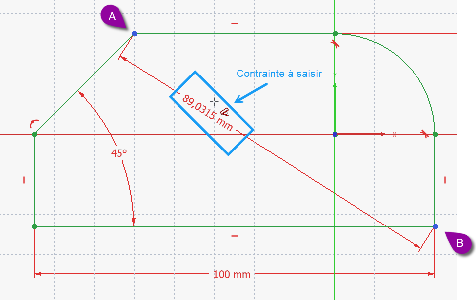
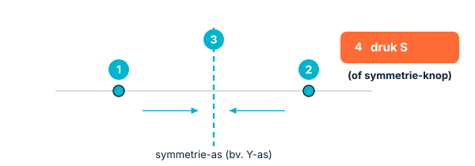

Constraints in de diepteLes contraintes en profondeurConstraints in depth
In H05 leerden we een schets volledig bepalen. Nu leren we de hele familie constraints kennen en — minstens even belangrijk — wanneer je welke gebruikt. Slim constrainen betekent: niet zomaar maten stapelen, maar je bedoeling vastleggen, zodat je behuizing later netjes meeschaalt.En H05, on a appris à contraindre entièrement. Découvrons toute la famille de contraintes et, surtout, quand utiliser chacune. Bien contraindre, c'est exprimer son intention, pas empiler des cotes.In H05 we learned to fully constrain a sketch. Now we meet the whole family of constraints and — just as important — when to use each. Constraining well means capturing your intent, not piling on dimensions.
- de belangrijkste geometrische en dimensionale constraints benoemen en toepassennommer et appliquer les principales contraintesname and apply the main geometric and dimensional constraints
- met gelijkheid en symmetrie minder maten gebruikenutiliser égalité et symétrie pour réduire les cotesuse equality and symmetry to need fewer dimensions
- constructiegeometrie inzetten als hulplijnenutiliser la géométrie de construction comme repèresuse construction geometry as helper lines
Workbench: Sketcher. Constraints in de Constraints-werkbalk of menu Schets.Atelier : Sketcher. Barre de contraintes ou Esquisse.Workbench: Sketcher. Constraints toolbar or Sketch.
Constructiegeometrie: knop Constructiemodus; lijnen worden blauw gestreept.Construction : bouton mode construction ; bleu pointillé.Construction: construction mode button; dashed blue.
- Selecteer element(en) — Ctrl voor meerdere.Élément(s) — Ctrl.Element(s) — Ctrl for several.
- Klik de constraint-knop (gelijk, symmetrie…).Cliquez la contrainte.Click the constraint.
- Bij een maat: typ de waarde → OK.Cote : valeur → OK.Dimension: type value → OK.
01De familie geometrische constraintsLa famille des contraintes géométriquesThe geometric constraint family
Geometrische constraints leggen een relatie vast, zonder getal. De belangrijkste:Les contraintes géométriques fixent une relation, sans valeur. Les principales :Geometric constraints fix a relationship, without a number. The main ones:
- Samenvallend — twee punten vallen samen (bv. een hoekpunt op de oorsprong).Coïncidence — deux points confondus (un coin sur l'origine).Coincident — two points meet (a corner on the origin).
- Horizontaal / Verticaal — een lijn ligt exact horizontaal of verticaal.Horizontale / Verticale — une ligne strictement horizontale/verticale.Horizontal / Vertical — a line lies exactly horizontal/vertical.
- Parallel / Loodrecht — twee lijnen lopen evenwijdig of staan haaks.Parallèle / Perpendiculaire — deux lignes parallèles ou à angle droit.Parallel / Perpendicular — two lines run parallel or at a right angle.
- Gelijk — twee elementen krijgen dezelfde lengte of straal (één maat volstaat dan voor beide).Égalité — même longueur/rayon (une cote pour les deux).Equal — same length or radius (one dimension then covers both).
- Raaklijn — een lijn en een boog (of twee bogen) raken elkaar vloeiend.Tangence — raccord tangent ligne/arc.Tangent — a line and an arc meet smoothly.
- Symmetrie — twee elementen liggen gespiegeld t.o.v. een as of punt.Symétrie — éléments symétriques par rapport à un axe/point.Symmetric — two elements mirror about an axis or point.
- Blokkering — bevriest een element volledig op zijn plaats.Blocage — fige un élément.Block — freezes an element in place.

02Dimensionale constraintsContraintes dimensionnellesDimensional constraints
Deze geven een echte maat: lengte, horizontale of verticale afstand, straal of diameter, en hoek. Je herkent ze aan de maatpijlen in je schets. Tip: leg liefst horizontale en verticale afstanden vast in plaats van schuine lengtes — dat houdt je schets leesbaar en voorspelbaar.Elles donnent une cote : longueur, distance horizontale/verticale, rayon/diamètre, angle. Préférez les distances horizontales/verticales aux longueurs obliques.These give a real measurement: length, horizontal/vertical distance, radius/diameter, and angle. Prefer horizontal/vertical distances over slanted lengths — it keeps the sketch readable.
Gebruik gelijk en symmetrie om je bedoeling te vangen. Wil je een vierkant bakje? Geef één zijde een maat en maak de andere gelijk. Moet iets gecentreerd blijven? Gebruik symmetrie t.o.v. een as. Zo hoef je later maar één getal te wijzigen.Utilisez égalité et symétrie pour exprimer l'intention : un seul nombre à changer ensuite.Use equal and symmetric to capture intent: then only one number to change later.
03Centreren met symmetrie: stap voor stapCentrer avec la symétrie : pas à pasCentring with symmetry: step by step
Centreren is waar veel mensen vastlopen — meestal door de selectievolgorde. Er zijn twee handige manieren.Centrer bloque souvent — surtout à cause de l'ordre de sélection. Deux méthodes pratiques.Centring is where many people get stuck — usually because of the selection order. Two handy methods.
Manier 1 — de eenvoudigste: teken meteen gecentreerd. Kies bij het tekenen de rechthoek-modus “Center, width, height” en klik op de oorsprong: zodra je de cursor erover beweegt verschijnt een coïncidentie-symbool. Klik je dan, dan zit het middelpunt automatisch vast op de oorsprong — perfect gecentreerd, zonder verdere constraint.Méthode 1 — la plus simple : mode rectangle « Center, width, height », cliquez sur l'origine (un symbole de coïncidence apparaît) → le centre est fixé à l'origine.Method 1 — the easiest: use the rectangle mode “Center, width, height” and click the origin (a coincidence symbol appears) → the centre is locked to the origin.
Manier 2 — de symmetrie-constraint (algemeen). Hiermee zet je twee elementen symmetrisch t.o.v. een as of een punt. Dé valkuil is de volgorde. De regel: selecteer eerst de twee elementen die symmetrisch moeten komen, en pas daarna de as of het punt waarrond — en klik dan pas de symmetrie-knop (of druk S).Méthode 2 — la contrainte de symétrie. Le piège, c'est l'ordre : sélectionnez d'abord les deux éléments, ensuite l'axe/le point, puis la symétrie (touche S).Method 2 — the symmetry constraint. The trap is the order: select the two elements first, then the axis or point, then apply symmetry (key S).

- SWil je iets op een as centreren (bv. links–rechts gelijk)? Selecteer het linkerpunt, dan het rechterpunt, dan de verticale as → S. De twee punten staan nu symmetrisch t.o.v. de as.Centrer sur un axe : point gauche, point droit, axe vertical → S.Centre on an axis: left point, right point, vertical axis → S.
- SWil je iets op de oorsprong centreren? Selecteer de twee elementen, dan het oorsprongspunt → S. Ze staan nu gespiegeld rond de oorsprong.Centrer sur l'origine : les deux éléments, puis le point d'origine → S.Centre on the origin: the two elements, then the origin point → S.
Verkeerde volgorde (de meest voorkomende fout): de as of het punt moet je als laatste selecteren, niet eerst. • Geen referentie geselecteerd: symmetrie heeft altijd een as óf een punt nodig — selecteer er één mee. • Een lijn i.p.v. twee punten: selecteer de twee eindpunten, niet de lijn. • Al te veel vastgelegd: zit er al een maat die de positie vastlegt, dan botst de symmetrie — verwijder eerst die maat.Mauvais ordre (l'axe en dernier). • Pas de référence (axe ou point requis). • Une ligne au lieu de deux points. • Déjà surcontraint : retirez la cote en conflit.Wrong order (axis/point last). • No reference (an axis or point is required). • A line instead of two points. • Already over-constrained: remove the conflicting dimension first.
04De gelijk-knop (Equal): stap voor stapLe bouton égalité : pas à pasThe equal button: step by step
Met gelijk (Equal) maak je twee of meer elementen even groot: dezelfde lengte (lijnen) of dezelfde straal/diameter (cirkels en bogen). Het is parametrisch: wijzig er één, de rest volgt. Zo bespaar je maten en houd je je bedoeling vast.Avec égalité, deux éléments deviennent de même taille (longueur, ou rayon/diamètre). Paramétrique : modifiez-en un, les autres suivent.With equal, two or more elements become the same size (length, or radius/diameter). Parametric: change one, the rest follow.
- 1Selecteer twee of meer elementen van hetzelfde type (twee lijnen, of twee/drie cirkels). Hou Ctrl ingedrukt om er meerdere aan te klikken.Sélectionnez deux éléments du même type (Ctrl pour plusieurs).Select two or more elements of the same type (Ctrl for several).
- EKlik de gelijk-knop in de constraints-werkbalk, of druk de sneltoets E. De elementen krijgen nu dezelfde grootte.Cliquez le bouton égalité ou la touche E.Click the equal button or press E.
Veel constraints hebben een sneltoets: C = samenvallend (coïncidentie), E = gelijk, S = symmetrie. Je ziet de sneltoets ook door met de muis even boven een knop te blijven hangen (de tooltip toont naam + toets).Raccourcis : C coïncidence, E égalité, S symétrie. Survolez un bouton pour voir le raccourci.Shortcuts: C coincident, E equal, S symmetric. Hover a button to see its shortcut.
Maar één element geselecteerd: je hebt er minstens twee nodig. • Verschillende types gemengd: een lijn én een cirkel kun je niet "gelijk" maken — kies twee lijnen óf twee cirkels. • Overbepaald: ligt de grootte al vast met een maat (bv. beide cirkels hebben al een diameter), dan botst gelijk ermee. Verwijder eerst één van die maten, en láát gelijk de grootte koppelen. • Op een vlak/punt geklikt i.p.v. de rand: selecteer de lijn of de cirkelrand zelf.Un seul élément (il en faut deux). • Types différents (ligne + cercle : impossible). • Surcontraint : une cote fixe déjà la taille — retirez-la. • Cliqué une face/un point au lieu de l'arête.Only one element (you need two). • Mixed types (a line + a circle won't work). • Over-constrained: a dimension already fixes the size — remove it. • Clicked a face/point instead of the edge.
05Constructiegeometrie: onzichtbare hulplijnenGéométrie de constructionConstruction geometry
Soms heb je een hulplijn nodig die niet in je uiteindelijke vorm mag belanden — bijvoorbeeld een middellijn om iets symmetrisch te plaatsen, of een cirkel waarop je gaten verdeelt. Daarvoor bestaat constructiegeometrie: geometrie die enkel helpt bij het construeren en het bepalen van constraints, maar geen deel wordt van het pad/de pocket. FreeCAD toont ze als een blauwe streepjeslijn. Met een knop schakel je gewone geometrie om naar constructiegeometrie en terug.Parfois il faut un repère qui ne doit pas apparaître dans la forme finale (un axe pour centrer, un cercle pour répartir des trous). C'est la géométrie de construction : elle aide à construire et contraindre sans faire partie du Pad/Pocket. FreeCAD l'affiche en trait interrompu bleu. Un bouton bascule entre géométrie réelle et construction.Sometimes you need a helper line that must not end up in the final shape — a centerline to place things symmetrically, or a circle to space holes on. That's construction geometry: it helps you build and constrain but isn't part of the Pad/Pocket. FreeCAD shows it as a dashed blue line. A button toggles normal geometry to construction and back.
Constructiegeometrie = hulpmiddel, geen materiaal. Ze verdwijnt niet uit je schets, maar telt niet mee als rand van je 3D-vorm. Ideaal om netjes en symmetrisch te positioneren.Géométrie de construction = aide, pas de matière. Elle ne devient pas une arête du solide.Construction geometry = a helper, not material. It never becomes an edge of your solid.
Gebruik een constructie-middellijn plus symmetrie zodat je behuizing altijd netjes gecentreerd blijft op de oorsprong. Schaal je hem later op voor een grotere printplaat, dan groeit hij symmetrisch — geen scheve gaten of verschoven wanden.Un axe de construction + symétrie gardent le boîtier centré : il grandit symétriquement.Use a construction centerline plus symmetry so your enclosure stays centred on the origin: scale it up and it grows symmetrically.
Open de basisschets van je bakje. Teken een constructie-middellijn door het midden en leg met een symmetrie-constraint de linker- en rechterzijde symmetrisch t.o.v. die lijn. Geef daarna nog maar één breedtemaat. Controleer dat de schets groen is. Speel ook eens met gelijk: maak twee zijden gelijk en zie hoeveel maten je daardoor uitspaart.Tracez un axe de construction, ajoutez une symétrie des deux côtés, puis une seule cote de largeur. Vérifiez le vert. Essayez aussi égalité.Draw a construction centerline, add a symmetry constraint for the left/right sides, then a single width dimension. Check it's green. Also try equal.
06Veelgemaakte foutenErreurs fréquentesCommon mistakes
- Alles met maten dichttimmeren. Gebruik gelijk/symmetrie/parallel; dat legt je bedoeling beter vast en geeft minder werk bij wijzigingen.Tout coter. Préférez égalité/symétrie/parallèle.Pinning everything with dimensions. Use equal/symmetric/parallel instead.
- Constructiegeometrie vergeten om te schakelen. Een hulplijn die "echt" blijft, wordt onbedoeld een rand van je vorm.Oublier de basculer en construction. Sinon le repère devient une arête.Forgetting to toggle construction. A helper left "real" becomes an unwanted edge.
- Tegenstrijdige constraints. Bv. twee lijnen parallel én loodrecht maken. De solver waarschuwt; verwijder de strijdige constraint.Contraintes contradictoires. Le solveur alerte ; supprimez-en une.Conflicting constraints. The solver warns; remove the clashing one.
Moet iets een vaste verhouding houden (bv. een gat altijd in het midden)? Gebruik dan een geometrische constraint (zoals symmetrie), géén maat. Wijzig je later de afmetingen, dan blijft het gat vanzelf gecentreerd. Maten gebruik je voor groottes, constraints voor relaties.Pour une relation fixe (trou toujours centré), utilisez une contrainte géométrique (symétrie), pas une cote. Cotes = tailles ; contraintes = relations.For a fixed relationship (a hole always centred), use a geometric constraint (symmetry), not a dimension. Dimensions = sizes; constraints = relationships.
07Samenvatting
Er is een rijke familie geometrische constraints (samenvallend, horizontaal/verticaal, parallel, loodrecht, gelijk, raaklijn, symmetrie, blokkering) en dimensionale constraints (lengte, afstand, straal, hoek). Leg je bedoeling vast met gelijk en symmetrie, en gebruik constructiegeometrie als onzichtbare hulplijnen. Zo blijven je schetsen leesbaar, robuust en makkelijk te wijzigen.Une riche famille de contraintes géométriques et dimensionnelles. Exprimez l'intention (égalité, symétrie) et utilisez la géométrie de construction.A rich family of geometric and dimensional constraints. Capture intent with equal and symmetric, and use construction geometry as invisible helpers.
- Constraints leggen relaties (geometrisch) of maten (dimensionaal) vast.Contraintes = relations (géométriques) ou cotes (dimensionnelles).Constraints fix relationships or dimensions.
- Gelijk + symmetrie = je bedoeling vastleggen met minder maten.Égalité + symétrie = moins de cotes.Equal + symmetric = capture intent with fewer dimensions.
- Constructiegeometrie (blauw gestreept) helpt, maar wordt geen vorm.Construction (bleu pointillé) aide sans devenir matière.Construction geometry (dashed blue) helps but never becomes a shape.